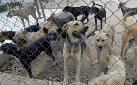
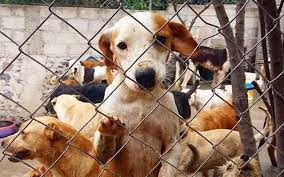
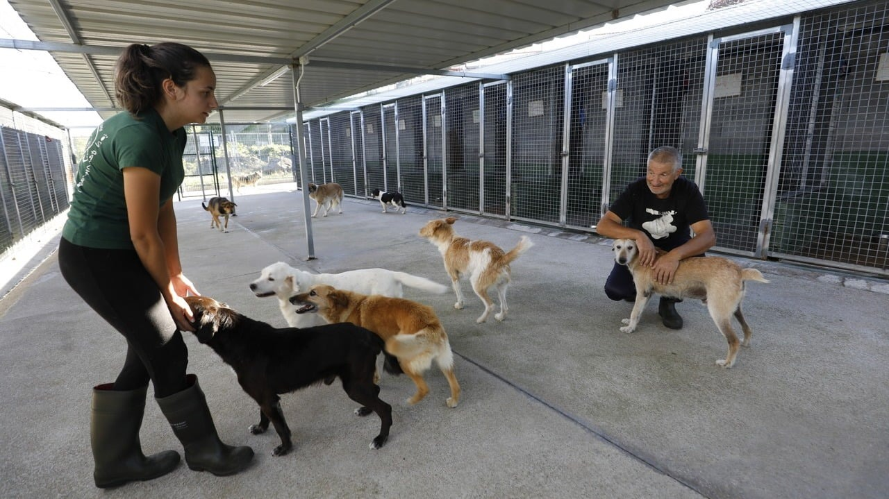
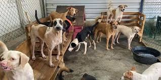

Sobre Nuestro Refugio
En Salvando Huellas, nuestra misión es proporcionar un hogar seguro y amoroso para perros abandonados y maltratados. Desde nuestra fundación, hemos rescatado y rehabilitado a cientos de perros, brindándoles una segunda oportunidad para una vida feliz y saludable.




Características del Refugio
- Espacios amplios y limpios para los perros.
- Atención veterinaria constante y especializada.
- Programas de socialización y entrenamiento.
- Campañas de adopción y concienciación sobre el bienestar animal.
Equipo Dedicado
Contamos con un equipo de voluntarios y profesionales que se dedican día a día a mejorar la vida de los perros en nuestro refugio. Desde veterinarios hasta cuidadores, todos trabajamos con un solo objetivo: brindar una vida digna y feliz a nuestros peludos amigos.
Cómo Puedes Ayudar
Tu apoyo es fundamental para que podamos seguir rescatando y cuidando a más perros. Puedes ayudarnos de varias maneras:
- Donaciones - Ayuda financiera para cubrir gastos de alimentación, atención médica y mantenimiento.
- Voluntariado - Únete a nuestro equipo y ayuda en las tareas diarias del refugio.
- Apadrinamiento - Apadrina a un perro y contribuye directamente a su cuidado y bienestar.